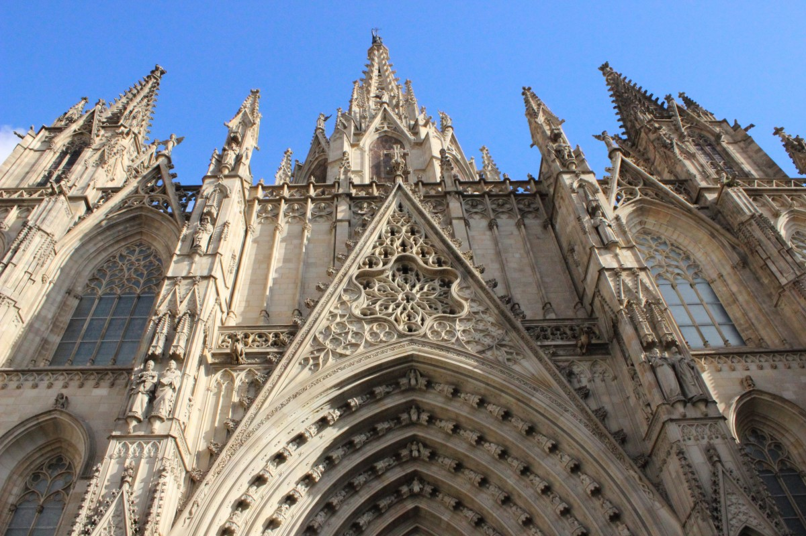
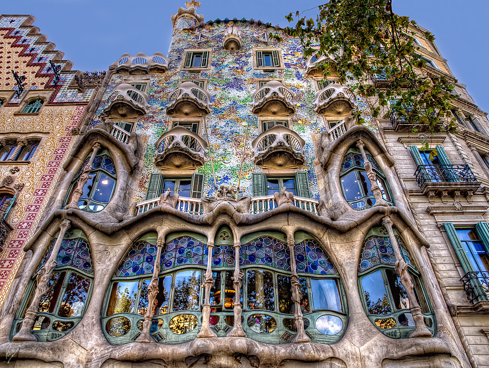

Attractions
Basilica de Santa Maria del Mar

One of the most emblematic buildings of the Catalan Gothic. An outstanding church built in the XIVth century with a purity and unity of style that is very unusual in large medieval buildings. You can visit the church during the worship time or enjoy its the beauty and its secrets along the cultural time, when you are almost alone with the building and discover its secrets.
For more information and stunning images of this gorgeous structure, click on the image
Casa Batlló

Casa Batlló is one of the two great buildings designed by Antoni Gaudí on Passeig de Gràcia, the other being La Pedrera.
From the outside the façade of Casa Batlló looks like it has been made from skulls and bones. The "Skulls" are in fact balconies and the "bones" are supporting pillars.
Gaudí used colours and shapes found in marine life as inspiration for his creativity in this building e.g. the colours chosen for the façade are those found in natural coral.
It's worth taking a visit to see Gaudí's Casa Batlló at night, when it is illuminated. The building was designed by Gaudí for Josep Batlló, a wealthy aristocrat, as an upmarket home. Señor Batlló lived in the lower two floors with his family and the upper floors were rented out as apartments.
This building is a stunningly original work and well worth the visit. If you decide to take a look around inside you will learn how much attention to detail Gaudí spent on his designs thinking about such things as varying window size depending on how high the window is from the top of the building. In this way he could ensure uniform lighting conditions in each room of the house. The audio tour that comes with the entrance ticket gives you fascinating insights into Gaudí and his influences when designing this house.
Credit to https://www.barcelona-tourist-guide.com/en/gaudi/casa-batllo.html for the description
Mercat de la Boqueria
 The Mercat de Sant Josep de la Boqueria, often simply referred to as La Boqueria, is a large public market in the Ciudad Vieja district of Barcelona, Catalonia, Spain, and one of the city's foremost tourist landmarks, with an entrance from La Rambla, not far from the Liceo, Barcelona's opera house. The market has a very diverse selection of goods.
The Mercat de Sant Josep de la Boqueria, often simply referred to as La Boqueria, is a large public market in the Ciudad Vieja district of Barcelona, Catalonia, Spain, and one of the city's foremost tourist landmarks, with an entrance from La Rambla, not far from the Liceo, Barcelona's opera house. The market has a very diverse selection of goods.
The first mention of the Boqueria market in Barcelona dates from 1217, when tables were installed near the old city gate to sell meat. From December 1470 onwards, a pig market was held at this site; at this time it was known as Mercadi Bornet. Later, until 1794, it was known simply as Mercat de la Palla, or straw market. In the beginning, the market was not enclosed and had no official status, being regarded simply as an extension of the Plaza Nueva market, which extended to the Plaza del Pino. The current name is believed to derive from the Catalan boc, meaning "goat", therefore a boqueria would be a place where goat meat is sold.
Later, the authorities decided to construct a separate market on La Rambla, housing mainly fishmongers and butchers. It was not until 1826 that the market was legally recognized, and a convention held in 1835 decided to build an official structure. Construction began on March 19, 1840 under the direction of the architect Mas Vilá. The market officially opened in the same year, but the plans for the building were modified many times. The inauguration of the structure finally took place in 1853. A new fish market opened in 1911, and the metal roof that still exists today was constructed in 1914.
Credit to https://en.wikipedia.org/wiki/La_Boqueria for the description